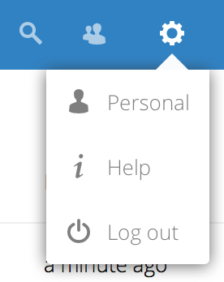
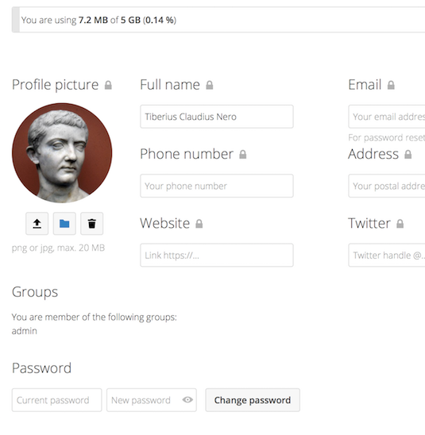

Het instellen van jouw voorkeuren
Als gebruiker kan je jouw persoonlijke instellingen beheren.
Om toegang te krijgen tot jouw persoonlijke instellingen:
Klik op jouw profielfoto in de rechterbovenhoek van je Nextcloud instantie.
Het menu Persoonlijke instellingen wordt geopend:

Persoonlijke Instellingen Menu
Kies Instellingen in het uitklapmenu:

Notitie
Als je een beheerder bent, kan je ook gebruikers beheren en de server beheren. Deze links zijn niet zichtbaar voor een gebruiker die geen beheerder is.
De opties op de pagina Persoonlijke instellingen zijn afhankelijk van de applicaties die door de beheerder zijn ingeschakeld. Enkele van de functies die je ziet, zijn de volgende:
Gebruik en beschikbare quota
Beheer je profielfoto
Volledige naam (Je kan hier alles invullen wat je wil, omdat het los staat van je Nextcloud login naam, die uniek is en niet kan worden gewijzigd)
E-mailadres
Lijst met je groepslidmaatschappen
Wijzig je wachtwoord
Kies de taal voor je Nextcloud interface
Koppelingen naar desktop- en mobiele apps
Beheer je stroom van activiteiten en meldingen
Standaardmap om nieuwe documenten in op te slaan
Je Federated sharing ID
Social sharing links
Nextcloud versie
Notitie
Beschikbare opties en instellingen zijn afhankelijk van de configuratie van jouw beheerders. Als je het wachtwoord of de display-naam in jouw persoonlijke instellingen niet kan wijzigen, neem dan contact op met jouw beheerder voor hulp.